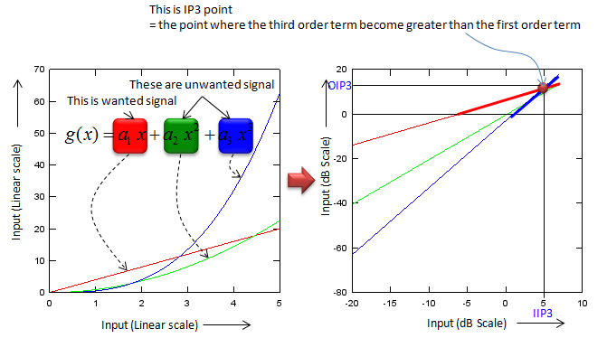

|
RF - IP3 Home : www.sharetechnote.com |
|
As you learned from Amplifier page, most of the amplifier shows some unwanted nonlinear properties represented as the second order and third order or higher oder polynomial terms. Let's assume that we have an amplifier with third order polynomial. When a signal (e.g, sin wave) comes into the amplifier, the amplifier produces not only the linearly amplified signal but also the nonlinear components as well. What we want to do is to analyze the degree of those non-linear portions of the amplifier. The analysis is very simple.. it can be explained by high school math as shown below.

Let's look at the graph to the left first. You would see three graphs, the red one is generated by the first order term (linear amplification), the green one is generated by the second order term and the blue one is generated by the third order term. As you see in the graph, when the input value (horizontal axis) is small, the value of the linear term(1st term, red graph) is greater than any other non linear term (blue or red), but as the input value gets larger and larger, you would notice that the blue (the third order term) and green (the second order) term gets larger at much higher rate than the red graph.. and eventually the blue and green gets larger than the red one. The point where the blue (the third order term) gets equal to the red (the first order term) is called Third Order Intercept point or IP3. This is very simple mathematical concept. But you wouldn't have seen this kind of graph (the graph on the left side) in your Rf/Amplifier text book. If you just change the scale of both x axis and y axis of the left graph, you would have the graph as shown on the right side. This would be the one you would have seen in the text book. The interpretation of the graph on the right side is exactly same as I expalined above. The reason why they convert the left side graph into the right side graph is that 'straight' line would be easier to understand and the slope of the each of the straight line can easily represent the degree of the effect created by the nonlinear terms.
Generally speaking, the higher IP3 value, the wider linear region that the amplifier has.
|